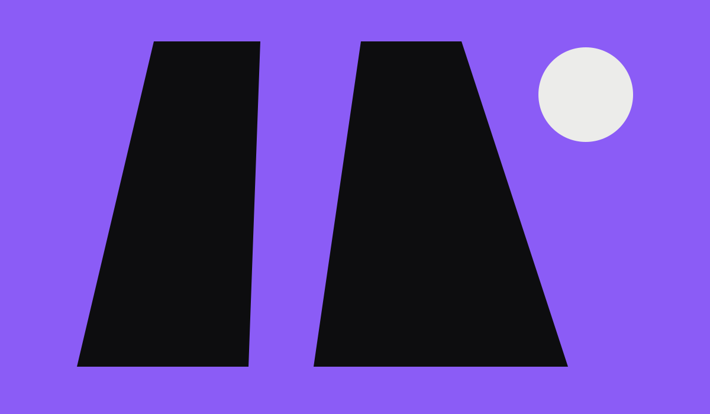

New
NewVector Shell
 ORVYN
ORVYNORVYN / DROP 01 / CONCEPT LABEL
Busana dirancang sebagai objek grafis. Koleksi terarah dalam putih optik, hitam krom, dan sinyal ultraviolet.

Field note 001
We work between uniform and sculpture. Every panel has a reason; every seam changes the gesture.
Read materials log